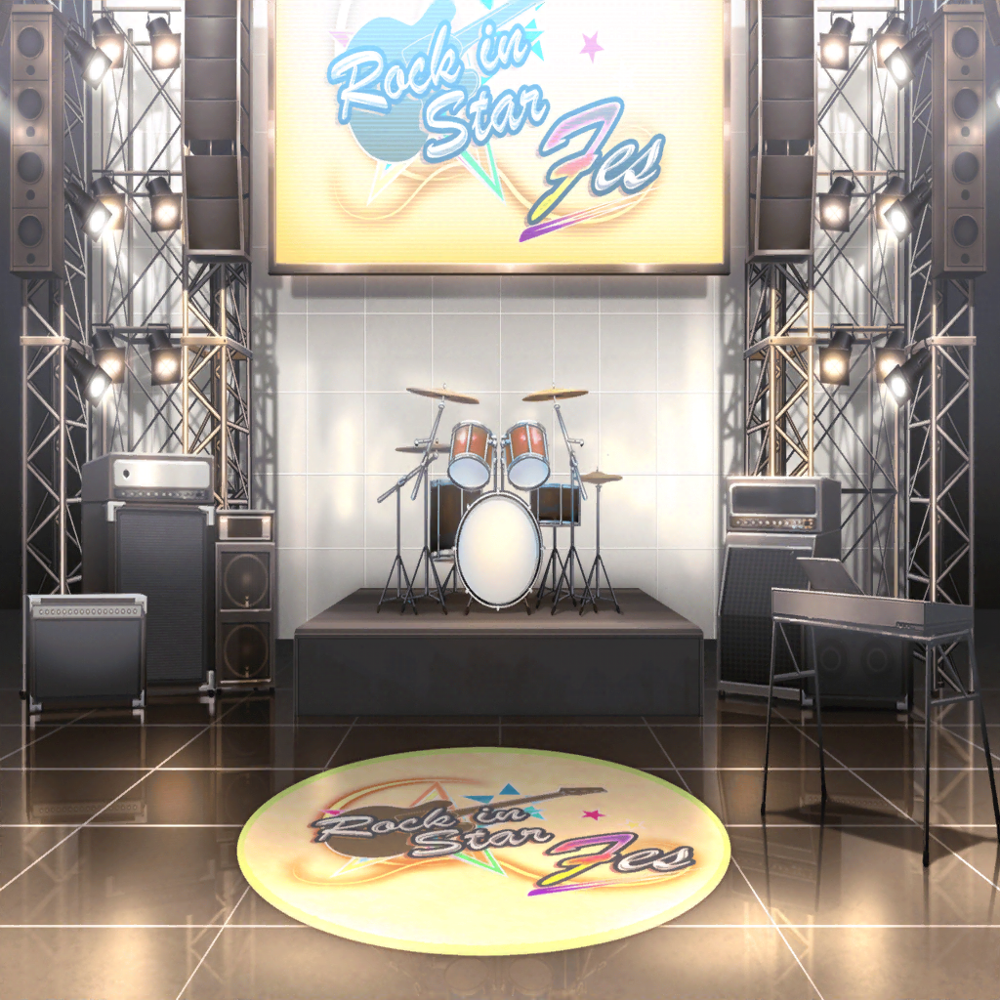

イベント会場
沙綾
まりなさん、ただいまー
まりな
おー、おかえり！
どうだった？
いろんなブース回れた？
沙綾
はい。おかげさまでいろんなブースに行けました。
……ね、香澄？
香澄
……それがまりなさ～ん、聞いてくださいよぉ！
まりな
そっか、なるほどね。
そんなことがあったんだ……
せっかく手作りしたチラシだもんね……
香澄
もう、すっごくショックだったんですけど、
おたえの言葉を聞いたら、頑張らなきゃって思って！
逆にメラメラ～って燃えてきたっていうか！
まりな
うん！
それでこそ香澄ちゃんだね！
香澄
私、絶対！ ぜ～～～～ったい！
みんなを振り向かせられるような歌、歌います！
まりな
いいね！
それに今度のポピパの曲、ホントにいいできだもん！
あの演奏を聴いたら、絶対みんなチラシを貰いに来るはずだよ！
りみ
あ、それなんですけど……
まりな
ん？
どうかしたの？
りみ
実は午前中だけで全部チラシを配っちゃって、
もう１枚もないんです……
まりな
あ、そうなんだ……？
なるほどね……そうしたら……
香澄
けど大丈夫です！
みんなの目にPoppin'Partyを焼き付けてきますから！
ね、みんな！
沙綾
もっちろん！
りみ
頑張ろうね！
有咲
おう！
たえ
…………え？ なに？
有咲
聞いてろよっ！
香澄
ねぇ！
そしたらさ、みんなで円陣組んでみないっ！？
沙綾
円陣？
あぁ……それいいかも！
いかにも本番前って感じで気合い入るかも！
有咲
それじゃあ、この辺に集合な。
……そそ、そんな感じで
香澄
あ、有咲が仕切ってる！
有咲
べ、別に仕切ってねーけどっ！
つーかいいだろ、これくらいやったって！
香澄
それじゃあ肩を組んで……
あ！ そうだ！
まりなさんも、入ってくださいっ！
まりな
……え？ 私？
私も……いいの？
香澄
当たり前じゃないですか！
だって今日はCiRCLEの代表として来てるんだから！
まりなさんがいないと意味ないです！
まりな
わぁ、なんかそういうの嬉しいな……
せっかくだから、一緒にやらせてもらおうかな
香澄
まりなさん、ここ！
私とおたえの間！
まりな
それじゃあ、おじゃましまーす。
……う、うわ～、なんか懐かしいね、こういう感じ！
高校生の頃に戻ったみたい……っ
有咲
な、なんかまりなさん……
めちゃくちゃテンション上がってますね
まりな
だってホントに久しぶりなんだもん！
……あのさ、知ってた？
『CiRCLE』って英単語には『円陣』っていう意味もあるんだよ
香澄
そうなんですか！？
知らなかった！
有咲
良かったな、香澄。
もし次の単語テストで出たら、
英語の補習受けなくてすむかもしれねーぞ
香澄
もぉ、有咲ぁ～！
こんな時に補習の話はしないでよぉ～！
沙綾
ちょっと、二人とも。
円陣組んだまま、くだらない話しないの！
だんだんみんなに注目されちゃってるじゃん
香澄
そ、そうだねっ……！
それじゃあ……まりなさん、掛け声お願いします！
気合い入れちゃってくださいっ！
まりな
わ、私が！？
全員
お願いしまーす！
まりな
……う、うん。わかった……
ちょっと注目浴びちゃって恥ずかしいけど……
空気を読まない感じで、やってみるね？
まりな
……ゴホンッ！
まりな
それじゃあ、Poppin'Party！
思いっきりやってこいっ！ 気合い入れていこうっ！！
全員
ポピパ！ ピポパ！ ポピパパ！ ピポパー！

イベント会場 ライブステージ
香澄
みなさん、こんにちはっ！！
私達、CiRCLEっていうライブハウスを代表してきましたっ！
Poppin'Partyです！
香澄
……わぁ〜。
ステージの上から見ると、ホントにすっごい人数だね、有咲！
有咲
ちょ、ちょっと、香澄！
急に私に話を振るなって！
香澄
え？
有咲に振っちゃダメなの？
香澄
それじゃあ、まりなさ～ん！
私達をこんなステキなところに連れてきてくれて、
本当にありがとうございまーす！
たえ
私も！
本当にこのステージで演奏してみたかった！
まりなさん、ありがとう！
有咲
あのな、お前ら！
ステージにいない人に話を振るなんて、もっとダメ！
つーか、ちょっとは空気を読めよ！
香澄
いいじゃん有咲〜！
だってお礼言いたかったんだもん！
香澄
それじゃあ、みなさん！
今日のこのライブのために作った新曲、聴いてください！